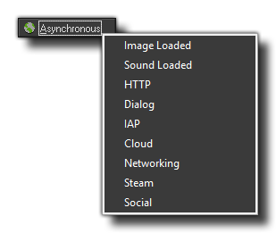

The Asynchronous Event
The asynchronous event is one of the many events that can be triggered in an instance and may contain code or actions.
 Asynchronous Event
Asynchronous Event
This event is special in that it is not triggered by GameMaker:Studio itself, but rather by the end of some other action, like the loading of a file, or the reply from a web server. The actual event is split into
various sub events:

So, say you want to add an image file to GameMaker:Studio. Well, you would code this in another event (maybe the create event) of an instance and then have that instance draw a loading bar while waiting
from the callback that tells GameMaker:Studio that the file has loaded. This callback triggers the Asynchronous Event where you would then do something else, like go to another room.
For more details on this event and how it functions please see More About Async Events.
Back : Events
Next : The Create Event